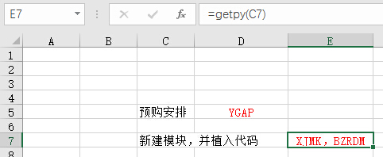
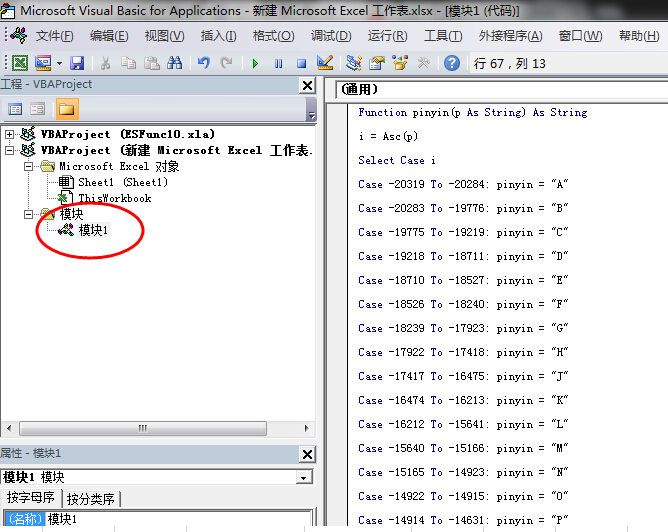

4.9 汉字转拼音缩写及单元格文字合并
ES自带的拼音函数经常失灵，自己做的模块最放心
 
代码方案一
Function pinyin(p As String) As String
i = Asc(p)
Select Case i
Case -20319 To -20284: pinyin = "A"
Case -20283 To -19776: pinyin = "B"
Case -19775 To -19219: pinyin = "C"
Case -19218 To -18711: pinyin = "D"
Case -18710 To -18527: pinyin = "E"
Case -18526 To -18240: pinyin = "F"
Case -18239 To -17923: pinyin = "G"
Case -17922 To -17418: pinyin = "H"
Case -17417 To -16475: pinyin = "J"
Case -16474 To -16213: pinyin = "K"
Case -16212 To -15641: pinyin = "L"
Case -15640 To -15166: pinyin = "M"
Case -15165 To -14923: pinyin = "N"
Case -14922 To -14915: pinyin = "O"
Case -14914 To -14631: pinyin = "P"
Case -14630 To -14150: pinyin = "Q"
Case -14149 To -14091: pinyin = "R"
Case -14090 To -13319: pinyin = "S"
Case -13318 To -12839: pinyin = "T"
Case -12838 To -12557: pinyin = "W"
Case -12556 To -11848: pinyin = "X"
Case -11847 To -11056: pinyin = "Y"
Case -11055 To -2050: pinyin = "Z"
Case Else: pinyin = p
End Select
End Function
Function getpy(str)
For i = 1 To Len(str)
getpy = getpy & pinyin(Mid(str, i, 1))
Next i
End Function
代码方案二
Function getpy(x)
On Error Resume Next
Application.Volatile
For i = 1 To Len(x)
PY = PY & Application.WorksheetFunction.HLookup(Mid(x, i, 1), [{"吖","八","嚓","咑","鵽","发","猤","铪","夻","咔","垃","呒","旀","噢","妑","七","囕","仨","他","屲","夕","丫","帀";"A","B","C","D","E","F","G","H","J","K","L","M","N","O","P","Q","R","S","T","W","X","Y","Z"}], 2)
Next
End Function
拓展阅读-实现自己的单元格合并函数
用于替代ES自带的合并函数(ES_Combine)
Function ConTxt(ParamArray args() As Variant) As Variant
Dim tmptext As Variant, i As Variant, cellv As Variant
Dim cell As Range
tmptext = ""
For i = 0 To UBound(args)
If Not IsMissing(args(i)) Then
Select Case TypeName(args(i))
Case "Range"
For Each cell In args(i)
tmptext = tmptext & cell
Next cell
Case "Variant()"
For Each cellv In args(i)
tmptext = tmptext & cellv
Next cellv
Case Else
tmptext = tmptext & args(i)
End Select
End If
Next i
ConTxt = tmptext
End Function
本节贡献者
@木头
@研特